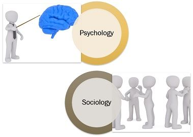
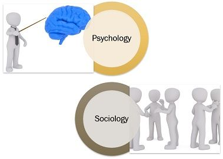

I have found in my time that nothing can contend with a one-two of creativity and patients; however, thatis not to say that the level of detail and meticulous commitment that this field demands should be overlooked. The perspective I aim to obtain during a project, servicing a customer, or solving a problem is one of creativity in that specific regard. I get there only by first committing to, then being patient with myself, the customer (or device) and the situation while I meticulously dissect and analyze the details. There are many things that come from expertise and mastery, but the one that I am homing in upon can only be developed. Available to you when you understand the skill to such sophisticated detail that you develop a sort of pre-cognition. Creativity in a division of this field comes from mastery, and that is exactly what I seek.
I have been enthralled with technology from a young age. Being told I should become an engineer, as a youngster, must have left some sort of mark on my mind. I studied all things related to computers through my public education. I was first exposed to coding with HTML in Junior High, and first began studying for my A+ certification in High School. My first passion was and has been art, and that was the career path I chose to follow after graduation. I have come to find the cost of being an artist is too high and developed an understanding for the world in pursuing that passion. During my time at Olympic I rediscovered another passion that I did not get much opportunity to feed in my earlier years, sociology.

I am the culmination of the actions I have taken, the habits I hold, and I chose this path. There are countless ways we decide to give up our control but seeing that forfeit for what it is is no easy step. When we recognize this a great leap has been made, and then it is time to leap again. I am the only person that needs to be okay with the way I am choosing to live my life. This struggle is real, and I am going to be tested by it. I will succeed.
RANT!!